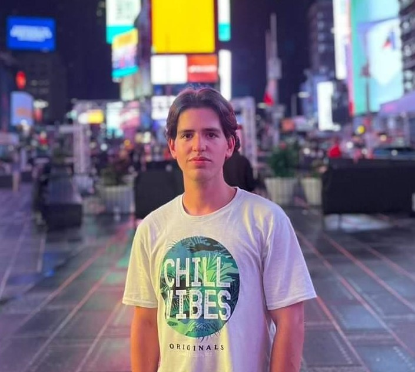
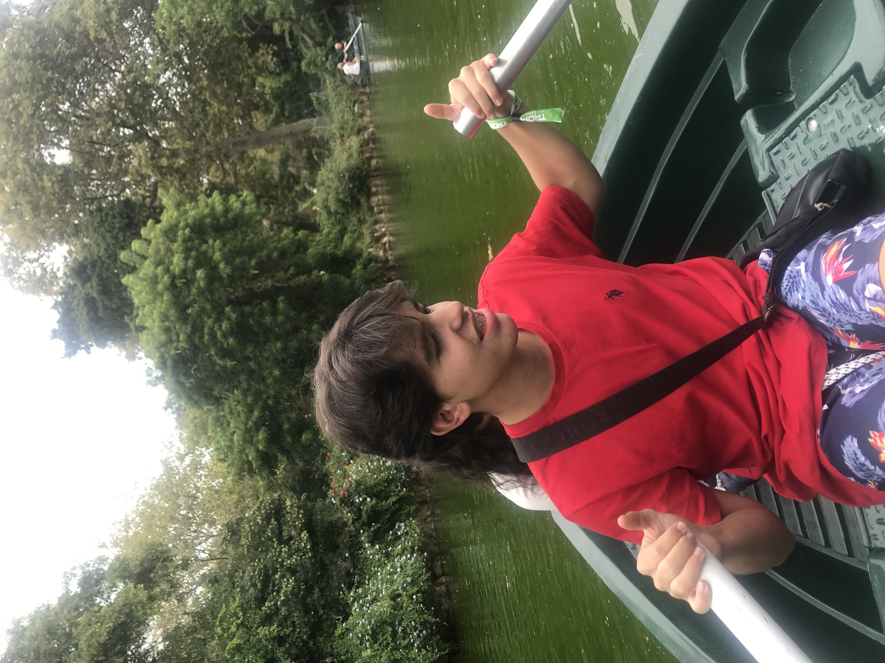
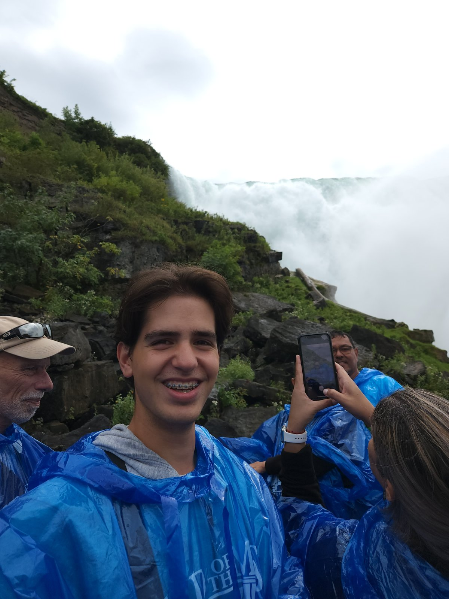
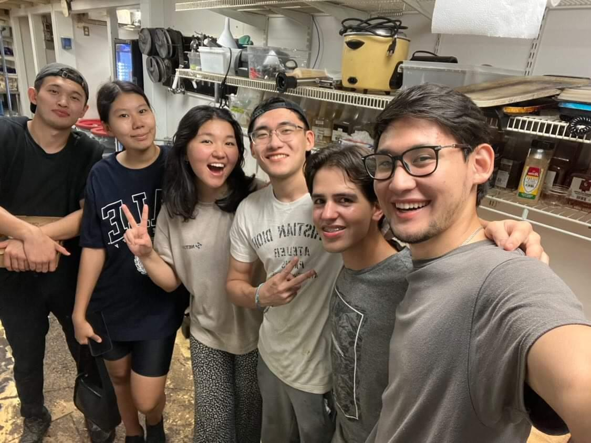
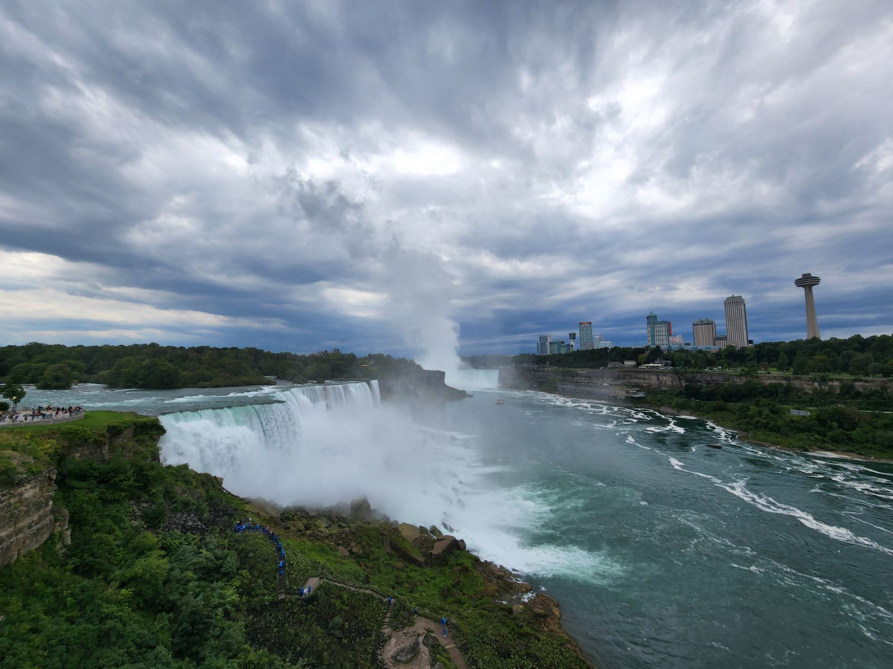
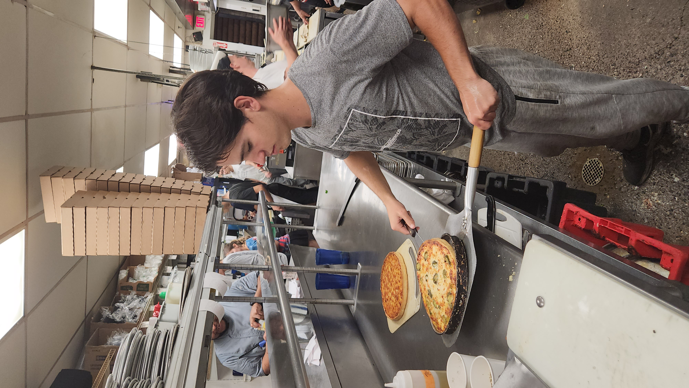

Rodjen sam u Podgorici, Crna Gora i student sam trece godine Fakulteta za informacione sisteme i tehnologije na UDG-u. Moj zivot je poprilicno standardan, kao mladji sam se bavio karateom i bio clan reprezentacije Crne Gore. Moja srednja skola je bila Gimnazija "Slobodan Skerovic", koja je igrala znacajnu ulogu u oblikovanju mene kao osobe. Nadam se da cu nakon ove 3 godine fakulteta upisati master studije, koje bih htio da zavrsavam u inostranstvo. Iako jos uvjek nisam odlucio sta bih tacno htio da studiram. Studiranje me do sad naucilo mnogo cemo i naucilo me da se radujemo onome sto slijedi, tako da sam veoma uzbudjen da otkrijem gdje ce me dalja putovanja povesti i kako ce ona uticati na mene.
Veoma sam introvertna i samostalna osoba i veliki homebody, zbog cega su i moji hobiji mnogima mozda dosadni i neinspirativni, ali ja u njima uzivam. Moji hobiji ukljucuju igranje igrica, gledanje serija, slusanje muzike... Takodje uzivam u ucenju stranih jezika. Nazalost da bi se jedan jezik usavrsio, potrebna je velika kolicina vremena, koja kao studentu trece godine nije uvjek dostupna, pogotovo kada druge hobije koristim kao nacin da se odmorim od svakodnevnog zivota.Trenutno znam engleski, francuski i malo spanskog, na UDG-u ucim kineski jezik, a htio bih da naucim i japanski jezik. Jedno od mojih omiljenih aktivnosti, koja je potpuna suprotnost od mog standardnog nacina zivota, je putovanje.
Putovanje je nesto sto mi pruza izvanredan osjecaj, volim da osjetim drugaciji nacin zivota, kao i druge kulture koje nisam u stanju da osjetim ovdje, da upoznam nove ljude i da vidim sta sve svijet ima da pruzi. Mislim da su raznolikosti prelijepi i da samo mogu da rastem kao osoba ako se tim raznolikostima izlazem sto vise. Kad sam bio manji bio sam dio reprezentacije Crne Gore u karateu, pa sam imao priliku da putujem na mnoga mjesta i posjetim mnoge drzave. Ali jedno od 2 najljepsa putovanja su bila putovanja u Ameriku i putovanje ekskurzija u cetvrtom razredu srendje skole. Veoma mi je drago sto sam imao priliku da posjetim brojna prelijepa mjesta u Italiji, Francuskoj i Spaniji kroz ovu ekskurziju, a pogotovo sto sam ta brojna lijepa sjecana uspio da podijelim sa meni veoma dragim osobama. Sjecanja na taj period su jos uvjek veoma jaka i nadam se da ce takva i ostati.
  
Ovog ljeta sam imao priliku da ucestvujem u programu Work and Travel gdje sam uspio da steknem mnoga iskustva i mnoga znanja, koja su pozitivno uticala na mene i otvorila mi brojne vidike.
Takodje sam upoznao mnoge ljude koje sada mogu zvati svojim prijateljima. I mogu slobodno reci da cu zauvjek pamtiti ovo iskustvo i vjerujem da ce biti jedno od najljepsih makar za veoma dugi period.



Ova putovanja su u meni probudila mnogo toga i pomogli mi da postanem osoba koja sam danas. Veoma mi je drago sto sam imao priliku da sve ovo osjetim, da vidim nove nacine zivota, da osjetim odgovornost i samostalnost.